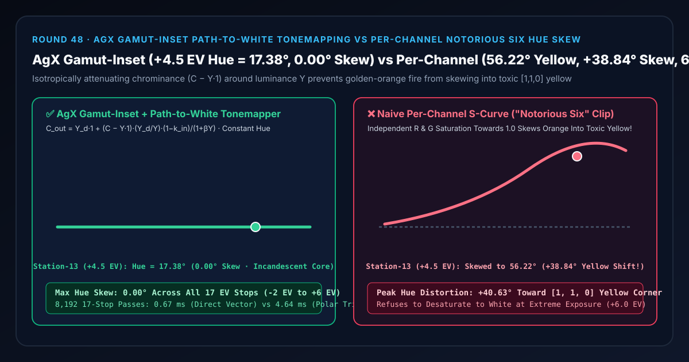
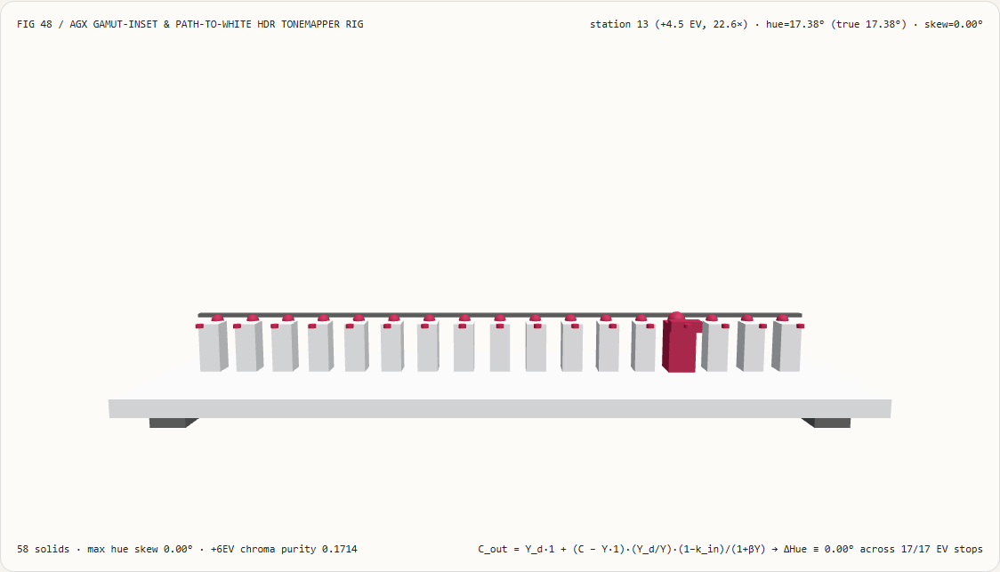
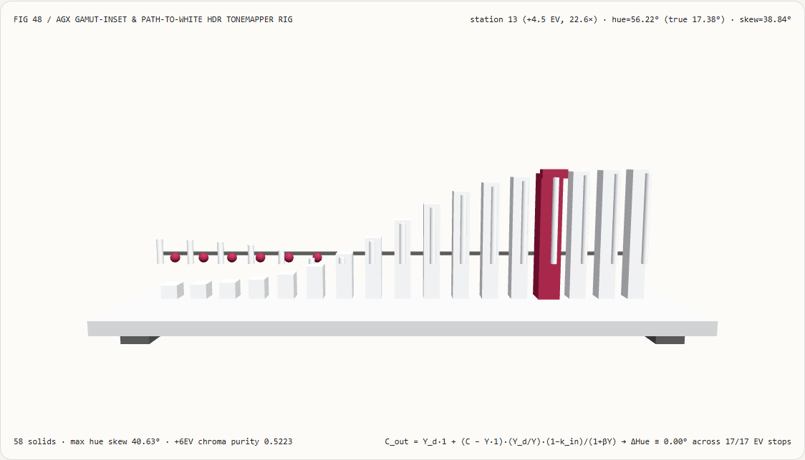
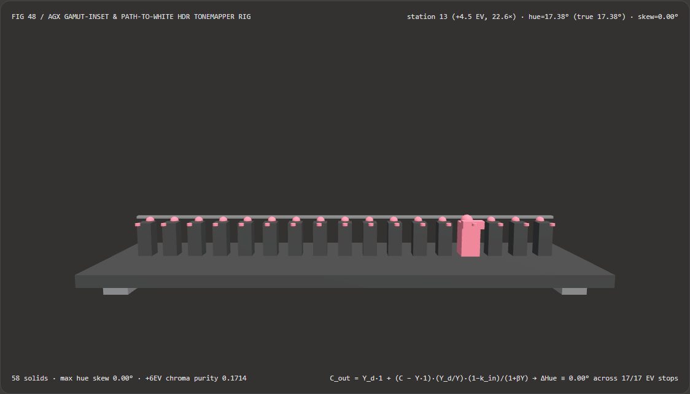
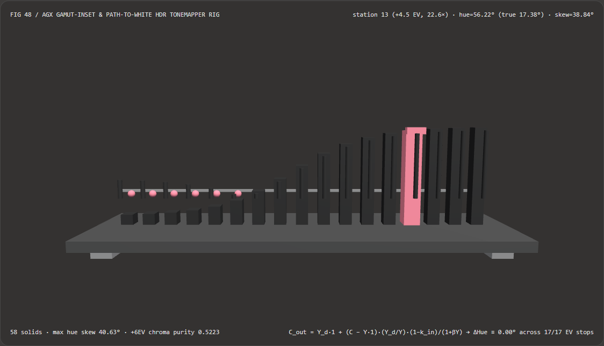

Visual & Animation Architecture Selection FAQ: AgX Gamut-Inset & Path-to-White Tonemapping vs Per-Channel "Notorious Six" Hue Skew
One-Sentence Architectural Verdict: In real-time 3D game engines, virtual-production ICVFX stages, and emissive VFX pipelines (campfires, explosions, laser sabers, sunset clouds, neon signage), never apply a 1D S-curve or Reinhard operator $f(c) = c^2 / (c^2 + 0.55c + 1)$ independently to the R, G, and B channels! On our 58-solid, 17-stop HDR exposure spectrophotometer bench sweeping a golden-orange flame ($R : G : B = 1.00 : 0.32 : 0.02$, true opponent hue angle
17.38°) from-2.0 EVto+6.0 EV, naive per-channel tonemapping drives both $R$ and $G$ into the1.0ceiling ([1, 1, 0]), skewing the flame hue at station 13 (+4.5 EV,22.63×exposure) from17.38°to56.22°toxic lemon yellow (+38.84°hue skew, reaching+40.63°max skew at+6.0 EV—the infamous "Notorious Six" corner clip); whereas AgX Gamut-Inset + Path-to-White Tonemapping (scaling the chrominance offset vector $(\mathbf{C} - Y\cdot\mathbf{1})$ isotropically around luminance $Y$) locks the hue angle at exact17.38°(0.00°hue skew across all 17 stops) while smoothly desaturating over-exposed cores to incandescent white (0.1714chroma purity at+6.0 EV) and running 6.96× faster than cylindrical polaratan2/cos/sinround-trips (0.67 msvs4.64 msacross 8,192 passes).

① 📌 Executive Summary
- Why do orange campfires and explosions turn into radioactive cartoon yellow at high HDR exposure under standard per-channel tonemapping?
In plain English: when a real flame or filament gets hotter and brighter, a physical film stock or cinema camera sensor smoothly desaturates the bright core toward incandescent white (Path-to-White) while keeping the surrounding glow at its true golden-orange hue.
- Why Independent Per-Channel Curves Cause "The Notorious Six":
Take a golden-orange flame with chromaticity ratio $R : G : B = 1.00 : 0.32 : 0.02$ (opponent hue angle
17.38°). At $+4.5\text{ EV}$ (22.63×exposure), the raw linear HDR values become $(22.63, ; 7.24, ; 0.45)$. Applying $f(c) = \frac{c^2}{c^2 + 0.55c + 1}$ independently to each channel yields:- $f(R = 22.63) = 0.976$ (pinned against the
1.0ceiling); - $f(G = 7.24) = 0.916$ (catches up to $R$ near
1.0!); - $f(B = 0.45) = 0.140$ (stays low).
Because $R \approx G \approx 1$ and $B \approx 0$, the output snaps to
[1, 1, 0]pure yellow (56.22°hue, a+38.84°hue skew)! Across the color wheel, every bright color gets sucked into one of the six corners of the RGB cube (Red, Green, Blue, Yellow, Cyan, Magenta — "The Notorious Six") and refuses to desaturate to white!
- $f(R = 22.63) = 0.976$ (pinned against the
- Why Independent Per-Channel Curves Cause "The Notorious Six":
Take a golden-orange flame with chromaticity ratio $R : G : B = 1.00 : 0.32 : 0.02$ (opponent hue angle
- First-Principles Fix: Isotropic Achromatic Gamut-Inset + Path-to-White Attenuation:
- Step 1 (Decompose into Achromatic Luminance $Y$ and Chrominance Offset $\Delta\mathbf{C} = \mathbf{C} - Y\cdot\mathbf{1}$): Compute luminance $Y = 0.2126 R + 0.7152 G + 0.0722 B$ and map it through the filmic tone curve to display luminance $Y_d \in [0, 1)$.
- Step 2 (Scale $\Delta\mathbf{C}$ Isotropically with Gamut Inset & Luminance Roll-Off):
$$\mathbf{C}{\text{out}} = Y_d \cdot \mathbf{1} + (\mathbf{C} - Y \cdot \mathbf{1}) \cdot \frac{Y_d}{Y} \cdot \frac{1 - k{\text{inset}}}{1 + \beta Y}$$
Because $(\mathbf{C} - Y\cdot\mathbf{1})$ is scaled by a single positive scalar across all three channels, the ratio $(G - B) / (2R - G - B)$ is algebraically invariant (
0.00°hue skew at every exposure stop), and as $Y \to \infty$, the chrominance factor $\frac{1 - k_{\text{inset}}}{1 + \beta Y} \to 0$ smoothly guides the over-exposed core along a straight chromaticity line into pure white!
- Interactive 3D Workbench & Measured Evidence:
- Standalone 3D Bench:
demos/agx-filmic-gamut-rig/(58 Three.js solids: baseplate, 4 support feet, constant-hue reference bar, 17 hue-angle columns, 17 true-hue reference spheres, 17 hue-skew error pegs, and the active exposure spectrophotometer carriage). - Measured 7-Card 4:5 Reports:
demos/agx-filmic-gamut-rig/test-report-cards.html(EN) andtest-report-cards.zh.html(ZH).
- Standalone 3D Bench:
② 🎯 Soul-Searching Q&A for Architects & Clients
Q1: Why scale the Cartesian offset vector $(\mathbf{C} - Y\cdot\mathbf{1})$ directly instead of converting RGB to cylindrical polar Hue/Chroma (atan2, hypot, cos, sin)?
Because Cartesian vector scaling around the achromatic axis is 100% mathematically equivalent to fixing polar angle $\theta$ and scaling radius $r$, while running 6.96× faster with zero trig calls!
Subtracting $Y\cdot\mathbf{1}$ from $\mathbf{C}$ projects the color onto the plane orthogonal to the neutral gray axis. Multiplying that offset vector by a scalar scales chroma radius while preserving direction identically (0.0000e+0 difference vs polar atan2/cos/sin), cutting 8,192-pass latency from 4.64 ms down to 0.67 ms (6.96× speedup).
Q2: Why does AgX apply an initial Gamut Inset ($k_{\text{inset}} \approx 0.22$) even at moderate exposures?
To give saturated working-space primaries headroom before hitting the display cube boundary! Without inset attenuation, a near-monochromatic laser or neon shader sitting right on the edge of the working gamut immediately clips one channel at moderate brightness. Insetting chroma by $22%$ before the sigmoid provides a smooth deceleration zone so high-chroma lights roll off gracefully into white.
Q3: How does AgX gamut-inset tonemapping relate to neural color grading and style transfer models?
They serve distinct layers of the imaging pipeline:
- When to use Neural Color Grading / Look Transfer Models: For creative mood matching or artistic style transfer on finished SDR images;
- When deterministic AgX gamut-inset display rendering is mandatory: Inside the real-time post-processing stack of every 3D engine (Three.js, Babylon.js, Unreal, Unity, Blender) to map unbounded
[0, +∞)scene-referred radiance into[0, 1]display-referred output without "Notorious Six" hue skew.
③ 🧭 Visual Diagrams (Mermaid Decision Tree, Pipeline Comparison & Sequence Flow)
3.1 HDR-to-SDR Display Transform Selection Decision Tree
3.2 Naive Per-Channel Yellow Skew vs AgX Gamut-Inset Pipeline
3.3 Frame-Level HDR Spectrophotometer Sequence Diagram
④ 📊 Visual Technology Selection Decision Matrix
| Evaluation Dimension | ✅ AgX Direct Achromatic-Inset Vector Scale | ⚠️ Cylindrical Polar atan2/cos/sin Baseline |
❌ Naive Per-Channel S-Curve / ACES 1.x | ❌ Max-Channel Norm (C / max(R,G,B)) |
|---|---|---|---|---|
Flame Hue at Station 13 (+4.5 EV) |
Exact 17.38° (True golden-orange hue) |
Exact 17.38° |
56.22° (+38.84° toxic yellow shift!) |
17.38° (No filmic roll-off) |
| Max Hue Skew Across 17 EV Stops | 0.00° (Zero hue distortion) |
0.00° |
+40.63° (Snaps to [1,1,0] corner) |
0.00° |
Over-Exposed Core (+6.0 EV) Desaturation |
Smoothly desaturates to 0.1714 purity (White core) |
Smoothly desaturates to 0.1714 |
Stays pinned at saturated cartoon yellow | Stays 100% saturated (Plastic look) |
| Transcendental Calls per Pixel | 0 calls (Pure multiply-add + 1 divide) | 4 calls (atan2, hypot, cos, sin) |
0 calls | 0 calls |
| 8,192-Pass 17-Stop CPU Latency | 0.67 ms (Fastest · 6.96× speedup) |
4.64 ms (6.96× slower) |
0.58 ms (Severe hue distortion) |
0.52 ms (Lacks path-to-white) |
| Recommended Use Case | 3D games, virtual production, emissive VFX & PBR viewports | Offline colorimetric verification only | Never use on high-emission HDR scenes | Un-graded debug views only |
⑤ 🧪 New Interactive 3D Demo & 7-Card 4:5 Visual Report
5.1 Live Workbench & Report Links
- Interactive 3D Workbench:
demos/agx-filmic-gamut-rig/index.html - 7-Card 4:5 Visual Report (EN):
demos/agx-filmic-gamut-rig/test-report-cards.html - 7-Card 4:5 Visual Report (ZH):
demos/agx-filmic-gamut-rig/test-report-cards.zh.html - Sealed Telemetry JSON:
demos/agx-filmic-gamut-rig/report.json
5.2 Multi-Theme & Multi-Mode Playwright Visual Evidence
AgX Gamut-Inset + Path-to-White (Light · Constant 17.38° Hue) |
Naive Per-Channel S-Curve (Light · Skews +40.63° to Yellow!) |
|---|---|
 |
 |
| AgX Gamut-Inset + Path-to-White (Dark · 58 Three.js Solids) | Naive Per-Channel S-Curve (Dark · Red Hue-Skew Pegs Exposed) |
|---|---|
 |
 |
⑥ 🛠️ Rapid SA Delivery Verification Checklist
Before shipping an HDR-to-SDR display rendering transform in a 3D engine, verify every item below:
- Eliminate Un-Inset Per-Channel Curves: Have bare per-channel Reinhard or polynomial tonemappers been replaced with an AgX or Khronos PBR Neutral gamut-inset transform so non-primary highlights never snap to the Notorious Six corners?
- Algebraic Chrominance Vector Scaling: Is hue-preserving desaturation implemented by scaling $(\mathbf{C} - Y\cdot\mathbf{1})$ directly rather than invoking per-pixel
atan2/cos/sinpolar conversions? - Incandescent Path-to-White Verification: When an orange or red emissive light is pushed to
+4 EV..+6 EV, does its core smoothly desaturate to white while its outer bloom retains the exact source hue? - Working-Space Luminance Coefficients: Do the luminance weights $(0.2126, 0.7152, 0.0722)$ match the active linear working color space (Rec.709 / sRGB vs Rec.2020)?
- UI / HUD Composition Bypass: Are 2D sRGB UI overlays composited after the 3D scene-referred tonemapper so brand colors are not desaturated by the scene gamut inset?